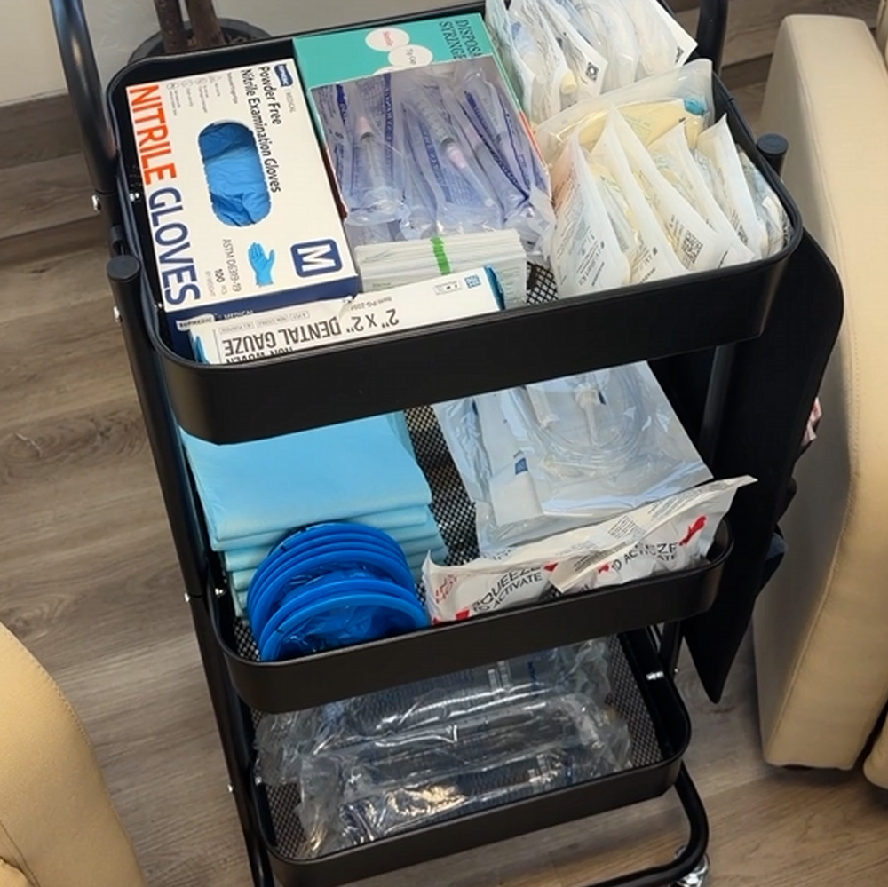
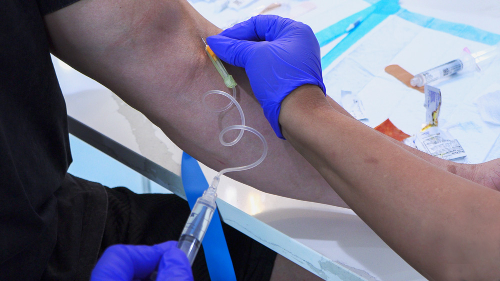
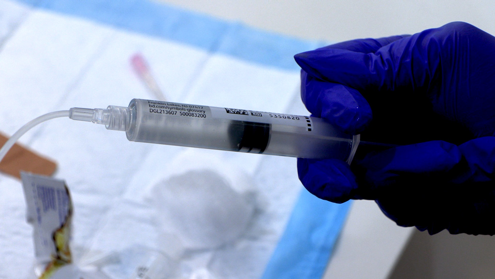

Intravenous administration delivers stem cells and exosomes systemically — beneficial for chronic inflammation, autoimmune conditions, and any condition that benefits from whole-body cell distribution. We use IV push, not a drip bag, for speed and cell viability.

| Item | Spec / Notes |
|---|---|
| IV catheter | 20g (standard veins) to 24g (small/difficult veins) — AutoGuard preferred |
| Syringe | 3 cc syringe — must hold at least 1 ml of fluid |
| IV tubing / administration set | Standard macro drip administration set |
| Extension tubing | For disconnecting/reconnecting line or changing fluids |
| Saline — flush | 10 cc saline flush syringe (pre-filled) |
| Saline — push vehicle | 3–5 cc in syringe to dilute cells for administration |
| Alcohol prep pads | Clean port before each injection; clean skin at access site |
| Gauze (2×2) | For discontinuing IV at end of session |
| Chux pad | Protect patient clothing when removing IV |
| Heat pack | Optional — use if unable to visualize vein; not required for patients with good veins |
| Emesis bag | Have available — rare, but some patients are needle-averse |
| Gloves / PPE | Always. Standard infection control precautions. |
Pre-hydration confirmed. Patient should have consumed at least 64 oz of water (or half body weight in oz) in the 24 hours prior. Dehydrated patients have poor vein access and a suboptimal cellular environment. Reschedule if significantly dehydrated.
Patient positioned comfortably. Seated or semi-reclined. Assess both arms for vein quality. Look for straight, easily visible veins in the antecubital fossa or forearm.
Establish IV access first. Insert catheter (20–24g), confirm blood return, flush with saline. Do NOT thaw cells until IV is confirmed and patent. This is the most common costly error.
Now thaw the cells. Remove BioFlow from dry ice or cryo-storage. Place on counter to begin thawing. Assess the patient, clean the joint (if also doing injections) — by that time, cells should be nearly thawed. Finish warming by gently rolling the vial in your palms if needed.
Confirm thaw — visual check. Gently tilt the vial. If you see the liquid moving freely with no visible ice crystals, it is ready. Do not inject ice. Do not leave thawed cells sitting for extended periods.
Draw cells into syringe. Using a 3 cc syringe, draw the thawed BioFlow from the vial. Add 2–3 cc saline to the same syringe to create a small dilution for smoother administration.
Clean the port. Wipe the injection port on your IV line with an alcohol prep pad. Allow to dry briefly.
Administer — slow push. Connect your loaded syringe to the port. Push slowly and steadily over 2–4 minutes. Do not rush — there is a small but real risk of intravascular clotting if cells are pushed too fast. A slow, even push gives the cells the best environment.
Flush immediately after. Using a 10 cc pre-filled saline syringe, flush the line completely. This ensures all product that remains in the tubing reaches the patient — nothing is left behind.
Remove IV and dress site. Withdraw catheter, apply gauze with light pressure, secure with tape. Use chux pad to protect clothing. Patient may sit for a few minutes before standing.
Document. Record product used, lot number, dose, date, time, and patient name on the injection sheet. See Chapter 4 for documentation requirements.


If you can't get the IV after the cells are thawed, you've lost the product. Always establish and confirm the IV line first — then thaw.
Dehydrated patients have collapsed veins, making access difficult or impossible. Poor hydration also means a less hospitable environment for the cells. Send hydration instructions when you confirm the appointment.
There is a small but real risk of intravascular clumping with rapid cell administration. Push slowly — 2 to 4 minutes for a standard 3–5 cc push. This is not a saline flush; take your time.
The IV tubing holds volume. If you don't flush with saline after the cells, a portion of your product never reaches the patient. Always flush with at least 10 cc saline immediately after.
Target administration within 10 minutes of thawing. The outer limit is approximately 30 minutes — but every minute counts. Do not thaw cells and then get distracted. Have everything else ready before you open the vial.